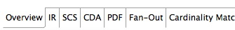
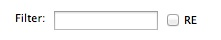
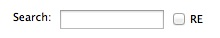
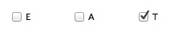

The Trace Matrix operates on files with a ".traces" extension. For MDHT projects, the initial traces file is is contained in the project named "org.openhealthtools.mdht.cda.ir.spec-name.model//model/spec-name.uml.traces/. For example the Shared Health Summary ("shs") trace file is at: org.openhealthtools.mdht.cda.ir.shs.model/model/shs.uml.traces.
Double clicking on this file opens the Trace Matrix table viewer in the main Eclipse window.
The Trace Matrix will open at the first table view that is specified in the tool configuration. Usually this is the "Overview", which shows most of the important information columns across the range of Information Requirements, Logical Models, MDHT CDA UML, and generated documents and code. The view being shown is visible in the bottom right hand corner of the new Trace Matrix window pane:

Two text-entry boxes appear at the bottom of the Trace Table named "Filter" and "Search" which allow the user to find specific content in the Trace Table.
Each text entry box has a tick-box next to it named "RE". When ticked, the "RE" indicates that the text box will match regular expressions to allow complex matches to be made with wildcards, etc.

A Filter applies a search term to all table rows in the Trace Matrix (even if they are not visible in the current View), and only displays rows that contain the search term indicated. Simply type in a term and hit the RETURN key. This may result in no rows being shown in a particular row if: (a) the search term does not match any content in the Matrix, or (b) if the columns in the view are not correlated with the matched rows. To clear the Filter, delete the text, and hit RETURN again.

Searches only attempt to match content that is in the current View. A Search will highlight all matching table contents in dark green, and place the first row containing matching content in the pane. (However, it does not scroll the table sideways if it is too large to fit in the frame, so the scroll bar may need to be used). As with most tools, the CTRL-G key combination locates the next row on which a matching search term is located. To clear the Search, delete the text, and hit RETURN again.
Differencing of two arbitrary projects that contain Logical Model snapshots and MDHT Models wth trace files in the projects can be done by multiply selecting the "models" projects of interest in the Eclipse Package Explorer, and right-clicking on any selected project to reveal the "Compare logical traces" menu item. This will initiate a comparison of the traces, and reveal the differences and similarities between them in a new window named "diff.traces". The file which the table view is showing is stored in the first models folder in the selection, and can be re-opened later without calculating new differences.
WARNING: This functionality is recommended only for model management roles, and most users are advised to use the following Git-based differencing approaches.
There are three other controls at the bottom of the Trace Matrix window:
